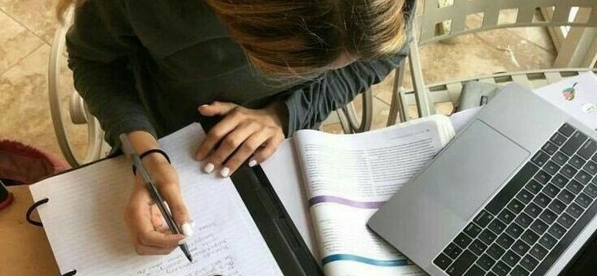

Personal
Saya Nazwa Keyla, saya lahir pada tanggal 16 Juni 2008, di medan. Saya adalah anak kedua, dari tiga bersaudara. Saya adalah siswi di kelas XI Rpl SMK Negri 9 Medan
Hallo gais, aku Nazwa
Saya Nazwa Keyla, saya lahir pada tanggal 16 Juni 2008, di medan. Saya adalah anak kedua, dari tiga bersaudara. Saya adalah siswi di kelas XI Rpl SMK Negri 9 Medan
Ada beberapa makanan dan minuman yang saya sukai
| Negara | Indonesia |
|---|---|
| lahir pada | 16 Juni 2008 |
| Suku | Melayu |
| Telepon | +62 83801934637 |